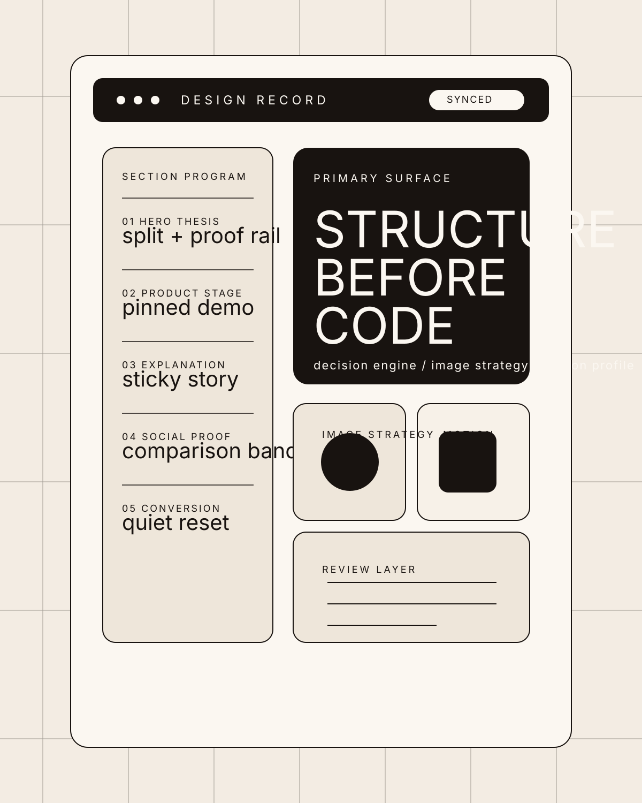
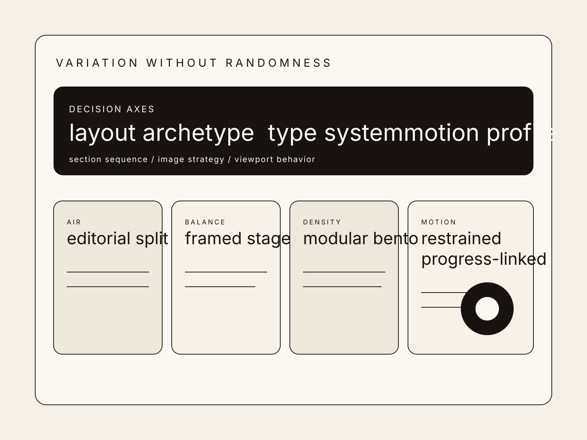

AI operations platform
Control the model surface like infrastructure.
Axon Grid gives platform teams one operating layer for prompts, routing, approvals, evaluation, and cost discipline across every agent workflow.


Operating surface
One control plane for every agent path.
This homepage uses a framed product stage, proof rail logic, and denser information pacing without collapsing into dashboard monotony.
Prompt routing
Send the right task to the right model.
Route by sensitivity, latency, budget, or required reasoning depth, with visible fallback behavior and approval rules.
Evaluation
Measure production quality continuously.
Attach evals to workflows, compare generations, and score model behavior before weak outputs reach customers or operators.
Guardrails
Keep human review where it matters.
Introduce policy checks, escalation rules, and approval states without slowing every low-risk action to a crawl.
Workflow view
Dense where it needs to be, clear where it counts.
Control room
Observe prompts, approvals, costs, and failure patterns in one frame.
Versioned prompts and system instruction trails
Policy states and human checkpoints per route
Spend anomalies, latency shifts, and model fallback signals
Signals
Live eval deltas
See where reasoning quality shifts after model changes or prompt updates.
Security
Reviewable by default
Keep audit trails visible without forcing operators into raw log spelunking.
Latency
Route by time budget
Decide when fast enough wins and when deeper reasoning is worth it.
Cost
Budget-aware orchestration
Use higher-cost models where they matter and cheaper models where they do not.
01 ingest
Read the task context
Inputs arrive with business risk, expected output format, and latency constraints already attached.
02 route
Choose the model path
Routing logic decides whether the task is cheap, fast, sensitive, or reasoning-heavy before execution.
03 review
Escalate where needed
Human checks appear only when the workflow crosses the approval threshold or confidence drops.
Customer proof
Operational trust, not marketing theater.
Platform team
"We stopped debugging agent behavior in Slack threads."
Axon turned our model routing and approval rules into something the whole org could actually inspect.
Compliance lead
"Review became targeted instead of universal."
We moved from blanket friction to tiered approval without losing policy visibility.
Finance ops
"Cost finally became a design variable."
The team can now decide where quality deserves spend instead of arguing after invoices arrive.
Plans
Start with one workflow. Expand across the stack.
For one high-value route
Deploy routing, approvals, and evaluation around the workflow that already matters most.
- Prompt version control
- Approval thresholds
- Evaluation dashboard
For platform teams
Expand to multiple agent paths, shared policy layers, and spend-aware orchestration.
- Cross-team governance
- Model routing matrix
- Cost and latency control
For regulated operators
Custom hosting, audit exports, and policy enforcement for sensitive or high-risk environments.
- Private deployment
- Extended audit trail
- Dedicated architecture support